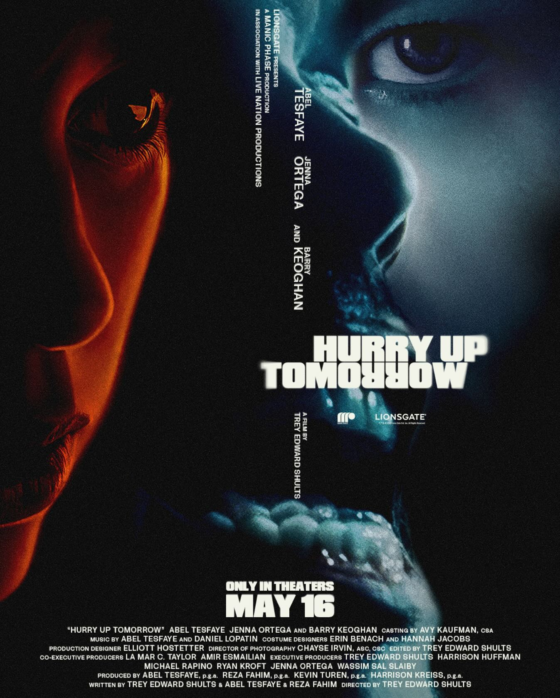
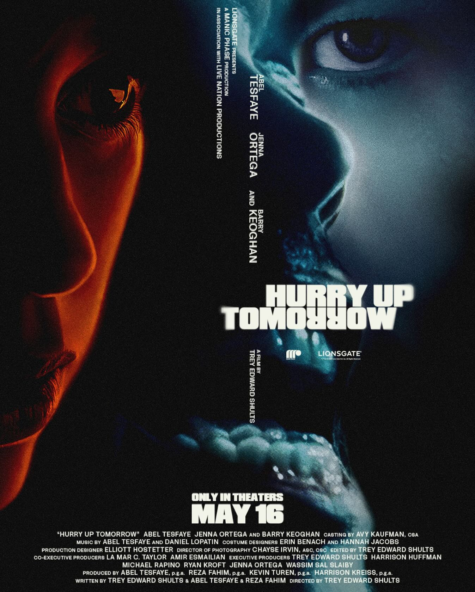

Noticias
GRAMMY
The Weeknd actúa durante la 67ta edición anual de los premios GRAMMY, el 2 de febrero de 2025 en el Crypto.com Arena en Los Ángeles.
The Weeknd hace regreso triunfal a los Grammy, este regreso marca un momento significativo en la relación entre The Weeknd y los Grammy, sugiriendo una posible reconciliación tras años de críticas por la falta de transparencia en el proceso de nominaciones.
Gira "After Hours Til Dawn"
The Weeknd ha anunciado la continuación de su gira "After Hours Til Dawn" en apoyo a su nuevo álbum. La gira comenzará el 9 de mayo de 2025 en Phoenix, Arizona, y concluirá el 3 de septiembre de 2025 en San Antonio, Texas.
A lo largo de cuatro meses, recorrerá más de 25 ciudades en Estados Unidos y Canadá, incluyendo Detroit, Chicago, Las Vegas y Miami. Artistas como Playboi Carti y Mike Dean acompañarán a The Weeknd en esta serie de conciertos.
Película "Hurry Up Tomorrow"
Además de la música, Tesfaye ha incursionado en el cine. El 16 de mayo de 2025, se estrenará la película "Hurry Up Tomorrow", un thriller psicológico en el que comparte protagonismo con Jenna Ortega y Barry Keoghan.
Esta película complementa el lanzamiento del álbum homónimo y refleja la versatilidad artística de Tesfaye. "LOS 40" Estos eventos recientes destacan la evolución constante de The Weeknd y su influencia en la industria del entretenimiento.
 

Galeria de Fotos
Alguna fotos que se proyectan aqui, son de conciertos y menciones de premios